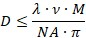

|
理论
|
共聚焦显微镜的原理可在通用章节中找到。
要充分利用共聚焦显微镜的横向和深度分辨率，必须正确选择针孔尺寸（检测用多模光纤的纤芯直径）。
最佳针孔直径取决于显微镜物镜的光学特性以及所用波长，可以使用以下公式计算：

其中λ是激光的波长，M是放大倍率，NA是显微镜物镜的数值孔径。
参数v以光学坐标给出，对于最佳深度分辨率应为2.5，对于最大横向分辨率应为0.5。如果选择v < 0.5，则横向分辨率将比传统显微镜提高√2 ≈ 1.4倍。然而，在这种情况下，大部分从样品反射的光无法到达探测器，因此会牺牲效率。